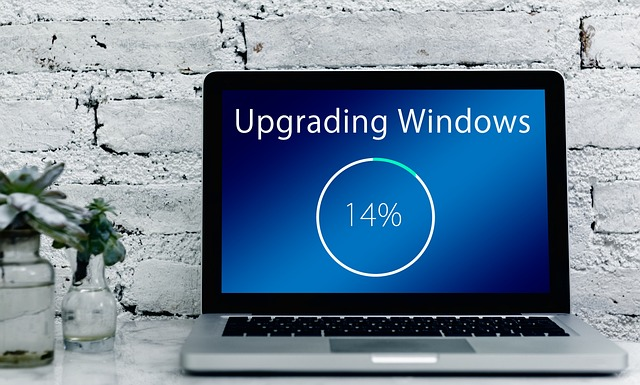

Slow System Performance
Problem Statement
Users have reported consistently slow system response times when launching or navigating through the application. The slowness manifests as delayed loading screens, unresponsive buttons, or prolonged task execution. These issues are observed across different user accounts and device types, suggesting the problem is not isolated to a particular environment.
Performance degradation occurs even under minimal workload conditions and becomes more noticeable after prolonged usage or when multiple instances of the application are running simultaneously.
Symptoms vs. Causes:
Multiple factors can contribute to slow system performance. These include hardware limitations, software misconfiguration, excessive background processes, or compatibility issues. The following table outlines common symptoms and their potential underlying causes:
| Symptom | Possible Cause |
|---|---|
| Slow launch time | Insufficient memory (RAM) |
| Delayed response to user actions | High CPU usage from background tasks |
| Freezes or stutters during operations | Disk fragmentation or full storage |
| Slow performance after updates | Outdated drivers or software conflicts |
| General lag on older machines | System does not meet minimum requirements |
For more details on compatible system configurations or diagnostic tools, refer to the Troubleshooting Reference page.
Possible Solutions
To improve system performance, perform the following checks and corrective actions:
- Close unused applications running in the background.
- Ensure the system meets or exceeds the recommended hardware specifications.
- Update the application to the latest version to apply performance improvements and patches.
- Check for and install the latest operating system updates and drivers.
- Free up disk space by deleting temporary files and clearing caches.
- Restart the system to clear memory and reset active processes.